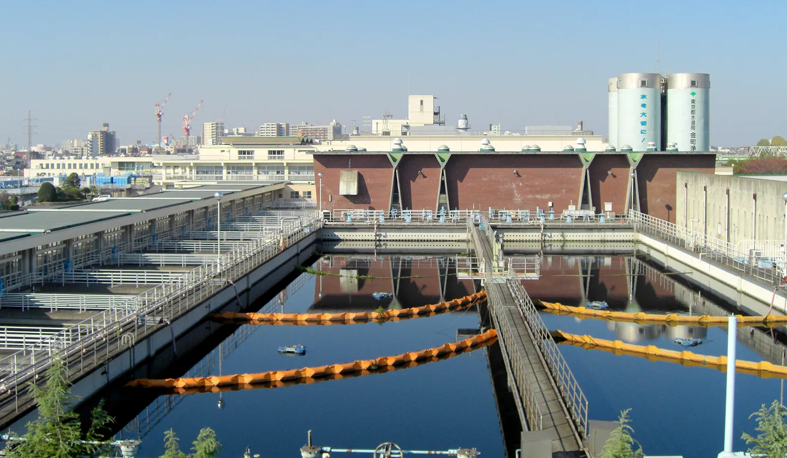

Water Purification
Water purification plays a crucial role in providing clean and safe drinking water to communities around the world. It involves the process of removing impurities, contaminants, and pathogens from water sources, making it suitable for consumption. Common methods of water purification include:
- Filtration: This method uses physical barriers like sand, charcoal, or membranes to trap impurities in water.
- Chemical Treatment: Adding chemicals like chlorine or ozone to kill bacteria and viruses.
- Boiling: Boiling water to kill harmful microorganisms.
Effective water purification is essential in preventing waterborne diseases and ensuring access to clean water for all.